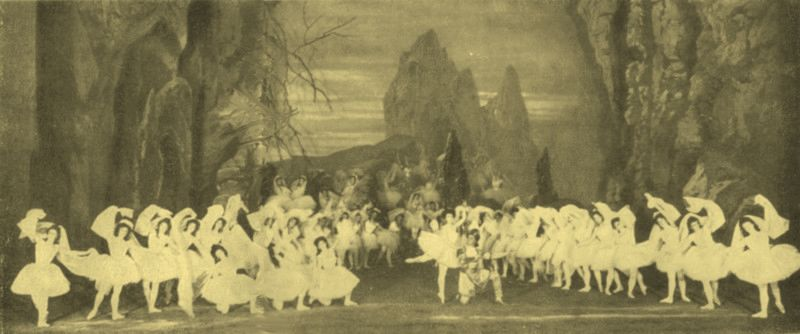
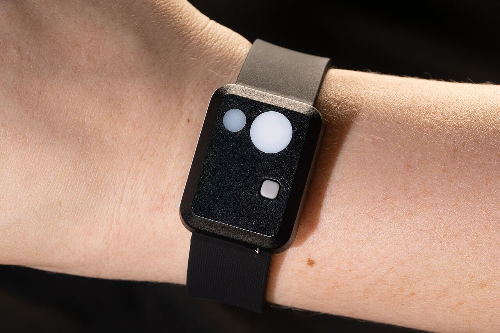
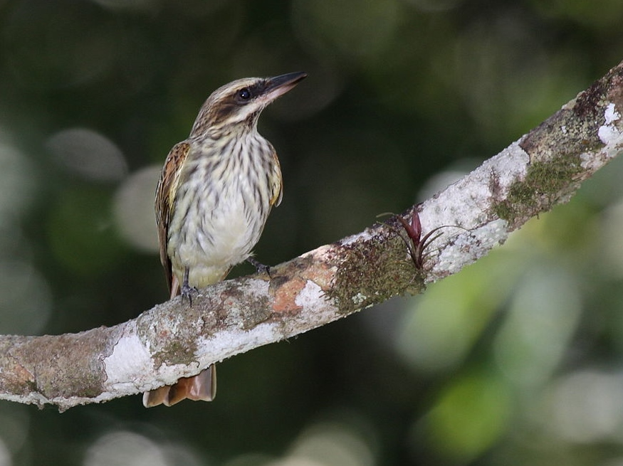
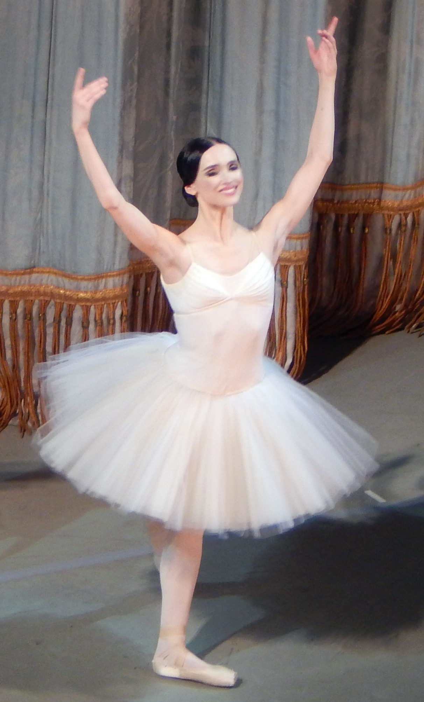

Lula.
diario de la mañana — el mundo, tu ciudad y lo que te asombra

Buen día. Sábado fresco, de 12° a 19°, con chaparrones después del mediodía: día de quedarse adentro un rato. Esta es la primera edición de fin de semana del formato nuevo, así que viene cortita y sin deberes. El ballet de hoy es el que más impresiona de todos y no por una bailarina sola, sino por treinta y dos juntas. Y la ciencia es argentina y da para pensar: doce años siguiendo a comunidades qom para medir, de verdad, cuánto sueño nos sacó la luz eléctrica.
- El mundo y el país, en breve2'
- Ciencia: lo que nos sacó la luz5'
- Mirá a tu alrededor2'
- La palabra del día1'
- Le français du matin2'
- Sábado de ballet: el Reino de las Sombras6'
- Lo que me asombra hoy1'
- Pasatiempo: sudoku difícil20'
- Cuaderno: repaso y quiz3'
Brasil vota mañana
Mañana se define Brasil. Más de 158 millones de personas eligen entre Lula da Silva y Flávio Bolsonaro, en un balotaje que las encuestas dan muy parejo, con Bolsonaro adelante dentro del margen de error. En la primera vuelta había sacado 47,03 % contra 45,16 %. El último debate fue anoche, en TV Globo. Para la Argentina es la elección del año: por esa frontera pasa cerca de un quinto de nuestras exportaciones.
También votan mañana Bulgaria (presidenciales) y Serbia (parlamentarias anticipadas, después de dos años de protestas estudiantiles). Y en Francia hay nuevas marchas hoy contra el costo de vida, con la huelga general convocada para el 5 de noviembre.
Acá, la semana cerró con el riesgo país arriba de los 700 puntos y el dato de actividad de agosto casi en cero, que deja al tercer trimestre al borde de la recesión técnica. El lunes se verá cómo abren los mercados con el resultado brasileño ya puesto.
Doce años midiendo cuánto sueño nos saca la luz
De qué estamos hablando: sabemos desde hace rato que la luz artificial atrasa el reloj biológico, pero casi todo lo que sabemos viene de comparar poblaciones distintas entre sí, que difieren en mil cosas además de la luz. Lo valioso de este trabajo es el diseño: un equipo argentino siguió a las mismas comunidades qom del norte del país desde 2012 hasta 2024, incluyendo el momento en que llegó la electricidad. No es una foto comparada con otra foto: es una película. Lo publicó Current Biology el grupo de Leandro Casiraghi (Universidad de San Andrés y CONICET).

Quién es quién
- Actigrafía: un acelerómetro que se usa como reloj y registra movimiento minuto a minuto durante semanas. No mide sueño directamente —para eso hace falta polisomnografía, con electrodos—, pero estima bastante bien cuándo te dormiste y cuándo te despertaste, y permite medir en la casa de la gente en lugar de un laboratorio.
- Cronotipo y atraso de fase: el reloj interno (el núcleo supraquiasmático del hipotálamo) se sincroniza cada día con la luz. La luz de la noche le dice «todavía es temprano» y empuja todo el ciclo más tarde: te dormís más tarde, pero el trabajo o la facultad siguen empezando a la misma hora. Esa diferencia es lo que se paga en horas de sueño.
Qué encontraron
- El tamaño: más de 12.000 episodios de sueño registrados por actigrafía en 156 participantes, comparando comunidades rurales que recién se electrificaban con comunidades semiurbanas que ya tenían luz.
- El resultado: en los dos grupos el sueño se atrasó, y en las comunidades rurales se acortó: unos 35 minutos menos de sueño en una década, según la versión publicada.
- La honestidad del paper: los autores no le echan la culpa solo a la lamparita. La electrificación vino con celulares e internet, y con cambios de trabajo y de vida; lo que miden es el efecto conjunto de la modernización, no el de la luz aislada.
- Un detalle para mirar con cuidado: el preprint de 2025 hablaba de «una hora» de sueño perdida y la versión publicada da 35 minutos. No es un escándalo: es lo que pasa cuando la revisión por pares aprieta el análisis. Pero es un buen recordatorio de por qué conviene citar la versión final.
Biotec en el mundo real · hacer cronobiología de campo
Este tipo de ciencia no sale de un biorreactor, pero es trabajo técnico puro y hay gente viviendo de eso en el país.
- Qué se mide y con qué: actigrafía por semanas, y en estudios más finos el DLMO (dim light melatonin onset): se toman muestras de saliva cada media hora al anochecer, bajo luz tenue, y se mide melatonina por ELISA o por espectrometría de masas. El momento en que empieza a subir es el marcador más confiable de la fase del reloj interno.
- La parte difícil no es técnica: es sostener una relación de años con una comunidad, con consentimiento informado real, devolución de resultados y acuerdos sobre qué se publica. Sin eso no hay estudio longitudinal posible.
- Salida laboral: cronobiología y sueño (laboratorios de la UNQ, la UBA, la Universidad de San Andrés y CONICET), análisis de datos de wearables, y la industria de dispositivos de medición del sueño, que es enorme y necesita gente que sepa qué está midiendo de verdad.
Casiraghi L, et al. «Longitudinal study of Toba/Qom communities reveals delay and shortening of sleep in real time». Current Biology (en línea, 15 de octubre de 2026), doi:10.1016/j.cub.2026.09.058 · preprint: bioRxiv
La verbena y el benteveo rayado



La flor: verbena
| Nombre científico | Glandularia peruviana (Verbenáceas), nativa de la pampa. Rastrera, con flores rojo intenso en ramillete. |
|---|---|
| Dónde y cuándo | En banquinas, pastizales y canteros de la Reserva Costanera Sur, floreciendo de octubre a marzo. Es de las nativas que más fácil se consiguen en viveros si querés armar un cantero de polinizadores. |
| Quién la visita | Mariposas, sobre todo. El tubo largo de la flor y el rojo son un combo clásico de polinización por lepidópteros: el rojo lo ven bien ellas y mal las abejas. |
El ave: benteveo rayado
| Nombre científico | Myiodynastes maculatus (Tiránidos). No confundir con el benteveo común, que está todo el año: este es migratorio. |
|---|---|
| Cómo reconocerlo | Rayado por todos lados: pecho estriado, antifaz negro, bigote oscuro y un toque rojizo en la cola. Hace un chirrido áspero, muy distinto del «bicho-feo» del benteveo común. |
| Por qué ahora | Llega de Sudamérica tropical en primavera para criar y se va en otoño. Si lo escuchás en el parque, es de los que acaban de llegar. |
sombra sustantivo
latín umbra (sombra) → castellano sombra (con una s- que todavía se discute) · francés ombre · inglés umbrella, umbrage
De umbra salen cosas que no parecen parientes: el paraguas inglés (umbrella, literalmente «sombrita», porque en Italia primero fue una sombrilla), la penumbra (casi-sombra, la zona parcialmente iluminada de un eclipse), el umbráculo del vivero y el verbo inglés to take umbrage, ofenderse, que es quedar bajo una sombra. En pintura, la tierra de sombra es un pigmento de óxido de hierro y manganeso: el nombre viene de Umbría, la región italiana, pero el cruce con umbra le quedó pegado para siempre.
Y en el ballet de hoy, las ombres son exactamente eso: no fantasmas con voluntad propia, sino proyecciones de alguien que no está. Por eso entran todas iguales, y por eso el efecto funciona.
Quel temps fait-il ?
— Quel temps fait-il aujourd'hui ?
— Il fait gris et il pleut un peu.
— Il fait froid ?
— Non, il fait doux. Prends un parapluie !
| Quel temps fait-il ? | ¿Qué tiempo hace? [kel tan fe-TIL] |
|---|---|
| il fait gris · il fait doux | está gris · está templado [il fe GRI · il fe DU] |
| il pleut | llueve [il PLÖ] |
| un parapluie | un paraguas [an pa-ra-PLÜÍ] |
Un truco
Para el clima, el francés usa il fait («hace») igual que nosotros: il fait froid, il fait chaud, il fait beau. Pero cuando hay un fenómeno concreto, el verbo es propio y no lleva fait: il pleut (llueve), il neige (nieva), il y a du vent (hay viento). Ese il no es nadie: es el mismo sujeto vacío del «llueve» castellano.
La Bayadère: el Reino de las Sombras
De La Bayadère —Petipa, música de Ludwig Minkus, estrenada en San Petersburgo en 1877— casi nadie se acuerda del argumento: una bailarina de templo en la India, Nikiya, un guerrero que la traiciona, una serpiente escondida en una canasta de flores. Lo que sobrevivió, y se representa solo también, es la escena que abre el acto siguiente: el Reino de las Sombras, la visión de opio del guerrero donde Nikiya vuelve multiplicada.

Qué pasa exactamente en esos siete minutos
Una rampa en diagonal, en el fondo del escenario. Aparece una bailarina sola y hace una secuencia muy simple: arabesque, brazos, paso adelante, arabesque. Después aparece la segunda y hace exactamente lo mismo. Y la tercera. Hasta 32 bailarinas —en algunas producciones 24— bajando en fila, repitiendo la misma frase unas cuarenta veces cada una, sin música que las empuje: el tema de Minkus se repite en loop, casi hipnótico.
No hay solista, no hay truco, no hay nada que mirar más que la uniformidad. Y ahí está la dificultad: cualquier error de una sola se ve inmediatamente, porque tenés 31 referencias al lado. Es el pasaje que más se usa para evaluar un cuerpo de baile, y por eso las compañías lo programan cuando quieren mostrar lo que tienen.
Tres cosas para saber
- Por qué nos llegó entera: el final original del ballet, con un templo que se derrumba, se perdió en la Rusia soviética. Las Sombras sobrevivieron porque se bailaban por separado. Natalia Makarova reconstruyó la obra completa para el American Ballet Theatre en 1980 y le devolvió el último acto.
- La India que no es la India: todo el exotismo de La Bayadère es una fantasía rusa del siglo XIX. Vale saberlo mientras se mira: hoy varias compañías revisan el vestuario y el maquillaje de algunos personajes por esa misma razón.
- Dónde se ve acá: el Ballet Estable del Colón la tuvo en temporada en años recientes. Mientras tanto, la escena está completa en YouTube en versiones del Mariinsky, el Royal Ballet y la Ópera de París.
Girar sin marearse se aprende, y se ve en el cerebro
Cuando girás, el líquido de los canales semicirculares del oído interno sigue moviéndose un rato después de que parás, y el cerebro interpreta ese movimiento como que todavía estás girando: eso es el mareo. Los bailarines hacen spotting —fijar la vista en un punto y tirar la cabeza al final— pero eso no alcanza para explicar lo que les pasa.
Un estudio de Imperial College comparó bailarines con personas sin entrenamiento en una silla giratoria y encontró dos cosas: los bailarines reportaban muchísimo menos vértigo, y tenían menos materia gris en la zona del cerebelo que procesa la señal vestibular, además de un reflejo vestíbulo-ocular más corto. La interpretación es que el cerebro entrenado aprende a desoír una señal que sigue llegando igual. Años de girar no cambian el oído interno: cambian cuánto caso le hace la cabeza.
El del sábado
De los que se hacen en dos sentadas, con un café en el medio.
Repaso y quiz
Repaso de idiomas
Quiz
¿Qué mide un actígrafo?
El estudio de las comunidades qom es valioso sobre todo porque…
El DLMO es…
En el Reino de las Sombras, lo difícil es…
Según el estudio del Imperial College, los bailarines…
«Umbrella» viene de…
- Quiz: movimiento · siguió a las mismas personas doce años · el inicio de la melatonina con luz tenue · que 32 hagan lo mismo · aprenden a desoír la señal · umbra.
- Repaso: il pleut · quel temps fait-il ? · c'était très bon · perder al auditorio · quedar vacante · lo que está en juego.
Sudoku:
Fuentes de esta edición
Mañana, domingo: edición lenta, la semana en seis titulares y el repaso de idiomas. Suerte en el hockey. — Lula.